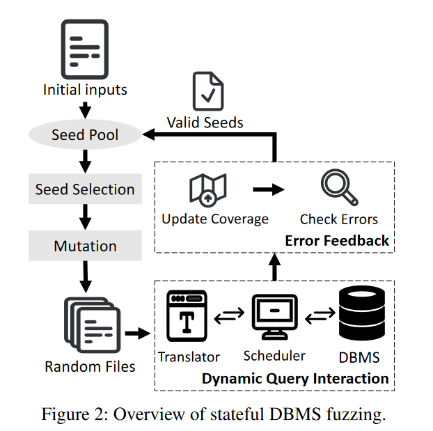
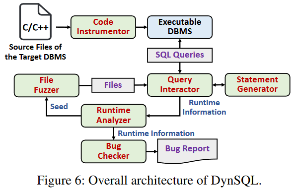

![[Review] DynSQL: Stateful Fuzzing for Database Management Systems with Complex and Valid SQL Query Generation](/blog/images/27/cover.png)
[Review] DynSQL: Stateful Fuzzing for Database Management Systems with Complex and Valid SQL Query Generation
The paper designs a stateful DBMS fuzzer called DynSQL. DynSQL adopts two new methods: Dynamic Query Interaction and Error Feedback.
Instead of generating all of the SQL queries before performing them, Dynamic Query Interaction allows the fuzzer to fuzz the DBMSs “step-by-step”, that is, dynamically determine the next statement after executing every prior statement.
Also, Error Feedback allows the seed generation to generate more valid SQL statements and queries.
Background:
Former DBMS testing tools: SQLsmith, SQUIRREL, SQLancer.
Existing DBMS fuzzers are still limited in generating complex and valid queries to find deep bugs in DBMSs.
SQLsmith generates only one statement in each query, SQUIRREL produces over 50% invalid queries and tends to generate simple statements.
SQLancer aims to figuring out logic bugs of DBMSs rather than general bugs.
Implementation:

- select seed from the seed pool, perform seed mutation, and generate files according to the seed.
- Translator translate the files into SQL queries(with DBMS state information).
- Scheduler feeds the DBMS for every single query, update the state information after every execution, and the Translator will provide a stateful query for Scheduler.

- Code instrumentor: compiles(using Clang) and instruments the code of the target DBMS, and generates an executable program that receives and processes SQL queries.
- Query interactor
- receives input files from the file fuzzer and performs dynamic query interaction to generate complex and valid queries.
- collects necessary runtime information of the target DBMS for dynamic analysis.
- Statement generator: uses an internal AST model to generate syntactically correct SQL statements.
- Runtime analyzer: analyzes the collected runtime information, identifies seeds according to error feedback, and selects a seed for the next round of fuzzing.
- File fuzzer: performs conventional file fuzzing(like AFL) to generate files based on the given seeds.
- Bug checker: detects bugs based on the collected runtime information and generates corresponding bug reports.
Evaluation:
RQ1: Can DynSQL find bugs in real-world DBMSs by generating complex and valid queries?
RQ2: How about the security impact of the bugs found by DynSQL?
RQ3: How do dynamic query interaction and error feedback contribute to DynSQL in DBMS fuzzing?
RQ4: Can DynSQL outperform other state-of-the-art DBMS fuzzers?
testbench: SQLite, MySQL, MariaDB, PostgreSQL, MonetDB.
- For RQ1
- calculate generated queries and statements, analyzing its validity.
- calculate number of bugs found.
- analyze statements in bug-triggering queries.
- analyze statement number for different queries.
- analyze distribution of different SQL statement types.
- analyze size of bug-triggering queries
- For RQ2
- analyze the bugs types of the detected bugs.
- perform 3 case studies to illustrate the importance of the bugs found.
- For RQ3
- perform ablation study.
- compare the performance of DynSQL, DynSQL without dynamic query interaction, DynSQL without error feedback, DynSQL without both dynamic query interaction and error feedback.
- For RQ4
- compare with SQLsmith, SQUIRREL.
- compare code coverage, bug detection, query complexity.
Future work:
- adopt it(Dynamic Query Interaction and Error Feedback) to logic bug detection.
- adopt Dynamic Query Interaction to other fuzzing areas, e.g., REST API fuzzing.
[Review] DynSQL: Stateful Fuzzing for Database Management Systems with Complex and Valid SQL Query Generation